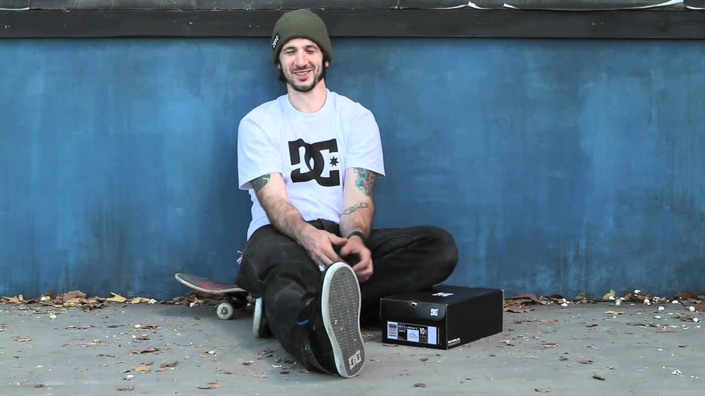
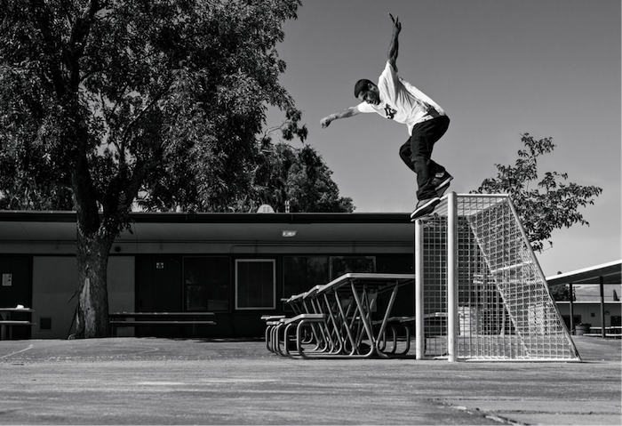
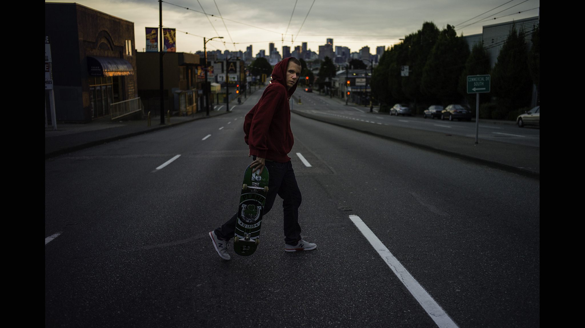
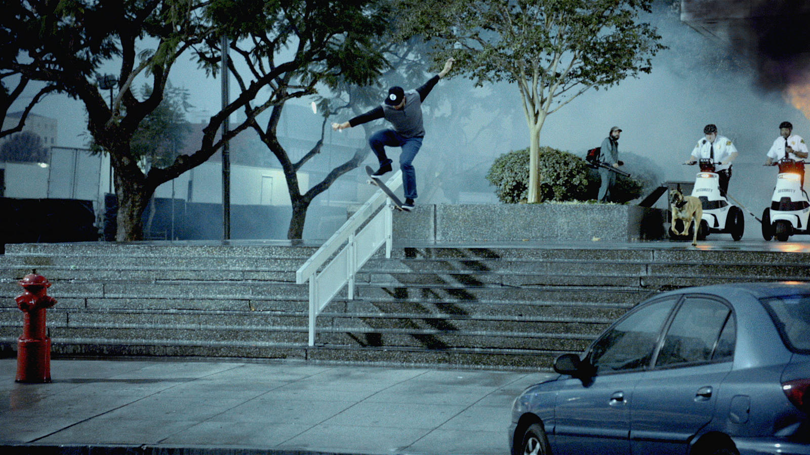

Eles fizeram historia e servem de expiração pra nova geração!

Chris Cole
CComeçou a praticar skate aos 8 e 9 anos de idade,
e durante dois anos praticou o desporto numa calçada em frente a sua casa. Após alguns anos tornou-se profissional e começou a competir em vários campeonatos.
Em 2005 e 2009 foi considerado o skatista do ano pela revista Thrasher Skateboard Magazine (considerado um dos maiores prêmios do skate mundial)
, e notavelmente apareceu nos jogos Skate, Skate 2 e Skate 3.Dentre seus muitos títulos
também há incluído as três medalhas de ouro e uma medalha de bronze nos X Games, sendo 2
ouros na modalidade Street em 2006 e 2007 e 1 ouro sendo no Street Best Trick também em 2007, já
o bronze sendo conquistado no ano de 2005 também na modalidade Street. Com sua equipe da Zero (marca de equipamentos de skate) conquistou o
Thrasher King of The Road de 2006. Conquistou o Maloof Money Cup em várias oportunidades e ganhou o Battle at The Berrics de 2009
Atualmente seus principais patrocinadores são: Plan b, Thunder, Spitfire, Reign Skate Shop,Stance, Kershaw Knives e Mophie.
Em maio de 2015 assina com a Plan B Skateboarding e passa a fazer parte do time de skatistas da Plan B.

Tiago Lemos
As impressionantes habilidades deste
skatista e a humildade que carrega em sua personalidade
quebram qualquer barreira, seja de uma língua estrangeira
ou rótulos de estilo de skate, Tiago Lemos é além.
Uma unanimidade, seja aqui em sua querida cidade natal ou
em algum paraíso do skate na China, Tiago é um skatista que
impressiona por onde passa, seja usando seu pop monstruoso
ou deslizando suas manobras rumo ao infinito.

PJ LADD
Patrick John Ladd, profissionalmente conhecido como PJ Ladd é um skatista profissional ,
base : regular.
Ladd foi rotulado de "lenda da costa leste"
pelo colega skatista profissional e chefe de equipe John Rattray maio 2013.
Ladd revelou em uma entrevista de 2013 que o skate era um aspecto importante de sua infância em Boston:
"Eu andava de skate minha caixa de e flatbar no armazém próximo a loja de autopeças do meu pai e,
em seguida, apanhar o comboio para o centro de patinar Antes que eu patinou.
Ladd é um membro da equipe do inaugural "NB #" ( " New Balance numérico " ),
a equipe de skate que é de propriedade da empresa de calçados New Balance .

Eric Koston
Eric Koston é um skatista profissional
tailandês naturalizado americano.Cresceu em São Bernardino,
na Califórnia, e anda de skate desde 1986. Conseguiu seu primeiro patrocínio
em 1991 e tornou-se profissional em 1993,
sendo também um dos personagens da série de jogos Tony Hawk's Pro Skater.
É co-proprietário da Fourstar Clothing e do
Skatepark "The Berrics" juntamente com o skatista Steve Berra
Seja Bem Vindo!
Esse site esta em versão beta, somente alguns usuarios podem acessar!